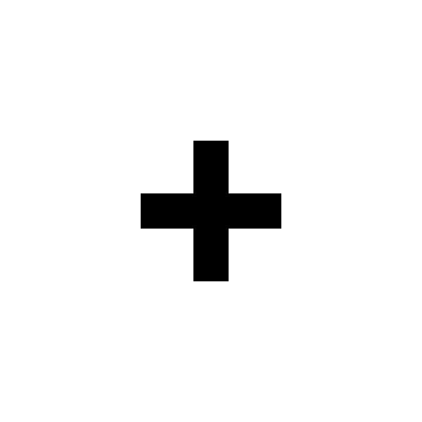
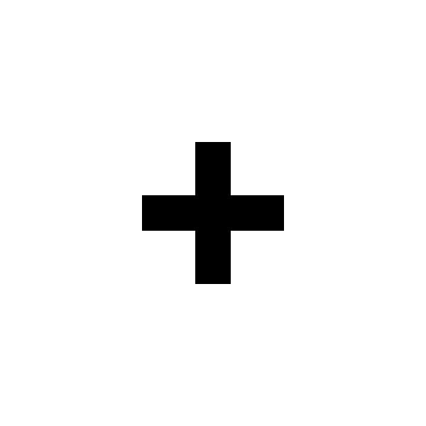
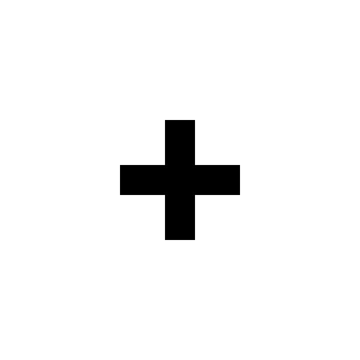

Where did Node.js come from?
- The suprising inspiration.
- Google's Open Source V8 Engine created in 2008
- Ryan Dahl embeds V8 engine and starts writing Node.js platform
{kind=link}
 


Jeff Potter @jpotts18
Doing the best I can

Node.js is a platform built on Chrome's JavaScript runtime for easily building fast, scalable network applications. Node.js uses an event-driven, non-blocking I/O model that makes it lightweight and efficient, perfect for data-intensive real-time applications that run across distributed devices.
Simple answer is "JavaScript on the server"
Modules make up the platform. This is a list from the manual.
| Assert (testing) | Buffer | C/C++ Addons | Console |
| Crypto | File System | Globals | HTTP |
| HTTPS | Modules | Net (networking) | OS (operating system) |
| Path (file paths) | Process | Stream | UDP |
| URL | Utilities | TLS/SSL | zlib (compression) |
// use Node.js http module by using module systemvar http = require('http');http.createServer(function (request, response) {response.writeHead(200, {'Content-Type': 'text/plain'});response.end('Hello World\n');}).listen(8124);console.log('Server running at http://127.0.0.1:8124/');
npm install {{csv}} --save--save this module and its version are recorded in a package.json fileTip: Choose your modules wisely. Check features and github.
| + Good Uses | - Bad Uses | |
| + JSON API's | - CPU heavy apps | |
| + Single Page Apps | - Simple CRUD / HTML apps | |
| + Utilizing Unix Tools | - Ohh Shiny... | |
| + Streaming data | ||
| + Soft-Realtime Applications |
Borrowed from Node Guide